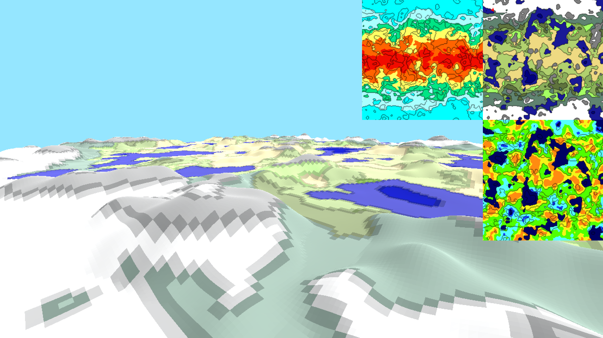
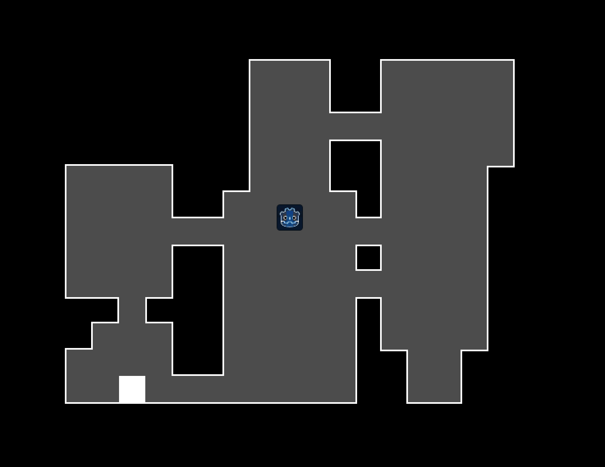
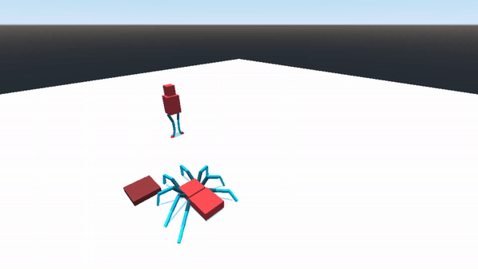

Introduction
Procedural generation is a powerful tool that can be used to create specific, unique, and immersive content on a case by case basis, as opposed to hand-crafting every facet of the game. This allows game developers to create systems to give their players infinite or unique worlds to play in, character animations that adapt to their environments, music that changes to fit the mood, and much more. Popular games such as Minecraft, Spelunky, the Binding of Isaac, No Man’s Sky, and many others leverage random number generators with procedural techniques to generate their levels and worlds so that each playthrough is unique. Procedural animation is used in countless games for everything from turning a player's head to generating smoke to ragdoll physics. For a game development company, the ability to create procedural systems allows for more flexible content that can, in turn, make a more immersive and enjoyable player experience.
This independent study will focus on three types of procedural content: procedural world/level generation, procedural animation, and procedural music. For each of these three facets of procedural content, we will gather resources and present them on a webpage to make the learning process easier for future game developers and present a small-scale demo to demonstrate one of the techniques. At the end of the semester, we will make a small game demo that utilizes techniques from all three disciplines of procedural content that we will present to a public audience.
World Generation
In this chapter, we will cover (1) what procedural world generation can do and who uses procedural world generation, (2) what we did to explore procedural world generation, and (3) provide some resources to go beyond what we have done here.
Procedural World Generation in the flesh
Procedural world generation is the process of generating a game's world based on a set of procedures. Many games use procedural world generation to give players a unique experience each playthrough. Below are some examples of games that use procedural world generation.
Rogue

Rogue is a DOS game from 1980. In Rogue, players explore the Dungeon of Doom. The player starts at the top level of the dungeon, going deeper into the dungeon to find the Amulet of Yendor. The entire dungeon is procedurally generated so each run of the game is a new experience.
The Binding of Isaac

The Binding of Isaac is an indie game by Edmund McMillen. It belongs to a genre of games heavily inspired by Rogue called roguelikes. In The Binding of Isaac, the player also fights their way through procedurally generated floors, going deeper into the dungeon to reach the final Boss.
Minecraft

Minecraft is an open-world game from Mojang. The player(s) explore an infinite, procedurally generated, 3d-world, mining for resources, building shelters, and trying to survive and thrive in their world.
How we used procedural world generation
In this section, we describe the different procedural world generation techniques we used to generate worlds.
Terrain generation

We implemented a procedural terrain generation algorithm in Godot to create wrapping worlds that consist of landmasses, oceans, lakes, biomes, and villages.
For our purposes, the process of generating the terrain was split into three parts:
- Generate a world map
- Generate a terrain height map based off of the world map
- Place villages around the terrain
Generate a world map

To make the world map, we followed JGallant's Procedurally Generating Wrapping World Maps in Unity C# tutorial. The tutorial is for Unity and C#, but JGalant provides enough information for us to write the code for Godot in GDScript. Our code can be found here.
We followed JGallant's tutorial to generate our height map, moisture map, and heat map, which we then used to define biomes. The map also wraps on both axes, so that the left edge lines up with the right edge, and the top edge lines up with the bottom edge. JGallant's tutorial also goes deeper, identifying specific lakes in the map and generating rivers based on gradient descent. We did not follow the tutorial this far, although we would like to in the future.
Village and cave generation

We also generated villages, following GDQuest's dungeon generator tutorial. This method is originally meant for generating caves, which we wanted to add to our mountains. Later down the line, we realized that we could also use this method to generate villages. Instead of placing a rectangular room, we place a house that is scaled to the size of the room.
Combining the two
To combine the two, we used a 'village-plot-request system.' First, we generate our world terrain. Then, the world generation script asks the terrain for some number of village plots of a certain size. The terrain searches for valid spots on the terrain that could fit the plots. Right now, the check just chooses random spots that are inside the map, but this could be modified to take terrain height or biome into consideration. The terrain then gives the world generation script coordinates on the map to place villages. The village generation script then generates villages of the specified size, then placing them on the map.
Going Further
Here are some of the resources we gathered during this portion of the project. Feel free to explore them to your heart's content.
Antvenom. How do Minecraft Worlds Generate? Youtube.
Antvenom looks describes how Minecraft worlds are generated. Should probably find a more primary source if possible.
GDQuest. Godot Procedural Generation. Github.
Here GDQuest has code for different 2d procedural world generation techniques for Godot. A good open-source repository that we can use in our own project.
HeartBeast. Random Level Generation with Walker - Godot Tutorial Youtube.
In this 3 part series HeartBeast goes over the process of creating a walker to creat random levels in a 2D games.
javidx9. Procedural Generation: Programing the Universe Youtube.
User javidx9 walks through the process of making a procedurally generated universe similar to “the Elite” series of games. With all stars being able to show their solar systems and use as little memory as possible.
JGallant. Procedurally Generated Wrapping World Maps in Unity C#. JGallant.
JGallant describes how to procedurally generate wrapping world maps in Unity.
Lague, Sebastian. Procedural Terrain Generation. Youtube.
A Youtube tutorial where Sebastian Lague implements procedural terrain generation in Unity.
McKendrick, Innes. Continuous World Generation in No Man’s Sky. GDC. Youtube.
Innes McKendrick talks about how No Man’s Sky generates their worlds.
Tyroller, Jonas. How to Randomly Generate Levels (and Islands). Youtube.
Jonas talks about how his team procedurally generated the worlds in their game, ISLANDERS.
Procedural Animation
In this chapter, we will cover (1) how games use procedural animation, (2) what we did to explore procedural animation, and (3) provide some resources to go beyond what we have done here.
Procedural Animation in the flesh
Procedural animation is the process of animating entities in a game through algorithms, instead of having developers animate entities by hand. Procedural animation allows entities to adapt to their environment for a more immersive experience. Below are some examples of games that use procedural animation.
Rain World

Rain World is a game set in a post-apocaplyptic world. You play as slugcat, trying to make it back to your tribe through an unforgiving landscape. The player encounters many weird creatures, all of which are animated procedurally to fit the environment.
Overgrowth

Overgrowth is an action fighting game, where the player plays as a rabbit trying to free their people from their evil overlords. Every character in the game is animated using procedural animation and ragdolls.
How we used Procedural Animation

To explore procedural animation, we followed Codeer's Unity PROCEDURAL ANIMATION tutorial (10 steps). This tutorial gave a high-level overview of the general process Codeer uses when animating a character.
We implemented the 10 steps in Godot and GDScript to animate a spider, and a person's legs. Our spider turned out looking sufficiently creepy, and the person's legs look quite goofy.
Going Further
Here are some of the resources we gathered during this portion of the project. Feel free to explore them to your heart's content.
Codeer. Unity PROCEDURAL ANIMATION tutorial (10 steps). Youtube.
Codeer describes at a high level how to procedurally animate a quadruped. Their Youtube channel has many examples of procedural character animation.
GDQuest. Godot Shaders. Github.
An open-source repository of 2d and 3d shaders for Godot.
Jakobsson, Joar and Therrien, James. The Rain World Animation Process. GDC. Youtube.
Joar Jakobsson and James Therrien talk about how Rain World tackles procedural animation.
Lague, Sebastian. Coding Adventure: Boids. Youtube.
Sebastian Lague explores the Boids flocking algorithm.
Rosen, David. Animation Bootcamp: An Indie Approach to Procedural Animation. GDC. Youtube.
David Rosen, from Overgrowth, talks about his approach to procedural animation with keyframing and ragdolls.
Procedural Music
In this chapter, we will cover (1) how games use procedural music, (2) what we did to explore procedural music, and (3) provide some resources to go beyond what we have done here.
What Can Procedural Music Do?
Procedural music allows the music of the game to adapt to the gameplay. In the simplest case, games like Pokemon Red change music depending on what town or route the player is on and whether the player is in battle. Other games, like Audiosurf 2 go the opposite direction and adapt the gameplay to whatever music the player provides.
How We Used Procedural Music
For our exploration into procedural music, we decided to look at layering different parts of songs together to form procedural compositions. We chose 4 different songs: Crab Rave by Noisestorm, Il vento d'oro from Jojo's Bizarre Adventure, Smash Mouth's All Star, and the jazz meme, The Lick.
For each piece, we arranged different melodies, harmonies, and percussion parts on different instruments. The procedural music player selected different instrumentations at random to produce a procedural composition of each piece. This can be used to adapt different instrumentations of a game's theme to different events in the game.
Going Further
Here are some of the resources we gathered during this portion of the project. Feel free to explore them to your heart's content.
Gamesfromscratch. Sound FX and Music -- Godot 3 Tutorial Series. Youtube.
This video goes over “[using] AudioStreamPlayer, loading audio files WAV and OGG, looping, panning, special effects, audio buses, positional audio and using Areas to toggle special effects on and off!”
Nuanain, Carthach. A Brief History of Machine-Assisted Music in Video Games. Medium.
In Carthach O Nuanain’s article he goes over the history of music that is assisted by machines and machine learning in video games.